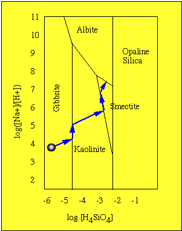
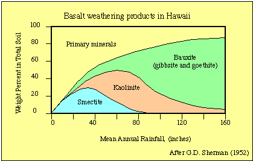
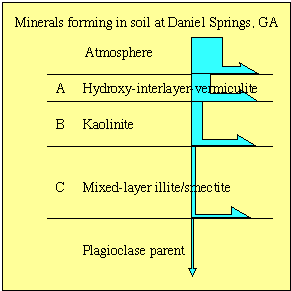
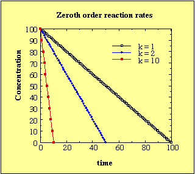
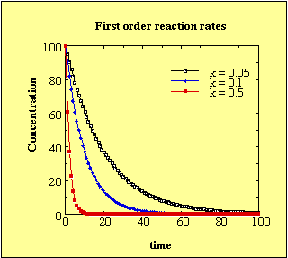
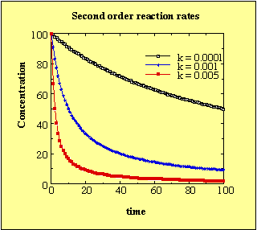
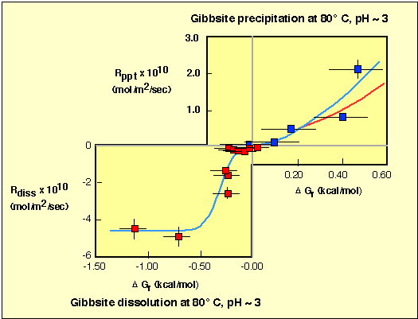

Berner E. K. and Berner R. A. (1987) The global water cycle:
Geochemistry
and Environment: Prentice-Hall, Inc., Englewood Cliffs, NJ, Pages
155-171.
Lasaga A. C. (1981) Rate laws of chemical reactions. In Kinetics
of
geochemical processes vol. 8, (ed. A. C. Lasaga and J.
Kirkpatrick),
Mineralogical Society of America, Blacksburg, VA, 1-67.
Nagy, K. L.,Blum, A. E., & Lasaga, A. C. (1991). Dissolution and
precipitation kinetics of kaolinite at 80°C and pH 3: The
dependence
on solution saturation state. American Journal of Science, 291, 649-686.
Nagy, K. L., & Lasaga, A. C. (1992). Dissolution and precipitation kinetics of gibbsite at 80°C and pH 3: The dependence on solution saturation state. Geochimica et Cosmochimica Acta.
Nagy, K. L.,Steefel, C. I., Blum, A. E., & Lasaga, A. C. (1990).
Dissolution and Precipitation of kaolinite: Initial results a 80° C
with application to porosity evolution in a sandstone. In I. D. Meshi
&
P. J. Ortoleva (Eds.), Prediction of Reservoir quality through chemical
modeling (pp. 85-102). Tulsa: A.A.P.G.
Recall that the nature of clay formed during the weathering process
depends
upon three factors:
Water composition and flow rate (i.e., Rates of reaction)
The formation of clays in the weathering environment is primarily
the
result of reaction of protons (H+
found in soil waters) with primary silicate minerals.
Although the primary source of protons is a result of the production
of organic acids (not the absorption of atmospheric CO2 by rain water) the production of acids can
be viewed as the production of carbonic acid.
4H2C2O4 + 2O2 -->
8CO2 +
4H2O
and recalling that carbonic acid forms by the reaction,
H2O + CO2--> H2CO3
Immediately,
H2CO3 -->
HCO3- + H+
Example 1.
A typical weathering reaction can therefore be represented by,
7 H2O
+ H+ + NaAlSi3O8 --->
Al(OH)3 + Na+
+ 3 H4SiO4
The stability fields for gibbsite, kaolinite, idealized smectite (Na-beidellite) and end-member albite are considered in the diagram below. The brackets indicate concentration in moles per liter.

1. If the water does not leave the system (i.e., very slow
hydrologic
flow rates) then the concentration of orthosilisic acid and the ratio
of
sodium to acid increase with time.
2. With time, the solution composition "evolves" and moves
toward the NE part of the diagram.
3. When the gibbsite - kaolinite boundary is encountered, then the
gibbsite
and excess H4SiO4combine
to form kaolinite.
2Al(OH)3
+ 2H4SiO4 --->
Al2Si2O5(OH)4 + 5H2O
4. Silica released by dissolution of albite is used to make
kaolinite.
Therefore, H4SiO4 concentration
does not change. The composition of the fluid evolves vertically,
towards
the north end of the diagram.
5. Once all the gibbsite is consumed, the fluid composition then
evolves
towards the NE again.
6. At the smectite - kaolinite boundary, both H4SiO4 and Na are used to form smectite. The fluid
composition tracks along the kaolinite - smectite boundary until all
the
kaolinite is gone.
7. Again, the composition tracks to the NE until the albite field is
reached and dissolution/ppt reach equilibrium.
Example 2.
The above scenario is for a closed system. Soils are open systems.
The faster the flow rate, the shorter the contact time of solution
with
the primary minerals.
Soils developed in Hawaii diplay the effect of different weathering
products
from a parent (basalt).
The diagram below shows the effect of rain fall versus the
percentage
of clays formed in soils.

Daniel Springs metagabbro weathering.

The class project on the Danial Springs meta-gabbro
is simialr to the work of Mike Velbel. He examined water chemistry and
petrology
of weathered terrain in the Blue Ridge Province (metamorphic
plagioclase,
garnet, hornblende assemblage).
Soil, saprolite and bed rock were examined (saprolite is a rock that
has weathered in place with texture retained).
Rates of reaction
How is the rate of this reaction assessed?
There are three basic types of rate laws that are used to describe
the
kinetics of a reaction.
This is the case where the rate of change in concentration (C) of a
component
with time (t) is related to some constant (k).
dC / dt = -k
or in integral form,
C = Co
- k t.
This means that the rate of reaction is independent of the initial
amount
of material present. The plot below depicts the change in concentration
with time assuming Co
= 100 and arbitratry k values.

dC / dt = -k C
or in integral form,
C = Co
e-k t
The rate of change is proportional to the amount of material present
(e.g., radioactive decay).
Rates can also be related to the difference between the actual concentration (C) of a solution and the equilibrium (i.e., steady-state) concentration (Cs).
dC / dt = k(Cs - C)
or in integral form,
(Cs - C) / (Cs - Co) = e-k t
The plot below depicts the change in concentration with time assuming Co = 100 and arbitratry k values.

dC / dt = kCn
or in integral form,
(1 / Cn-1) - (1 / Con-1)
= (n-1) kt
Rates can also be related to the difference between the actual concentration (C) of a solution and the equilibrium (i.e., steady-state) concentration.
for C < Cs
dC / dt = k (Cs
- C) n
for C > Cs
dC / dt = k (C - Cs) n
The plot below depicts the change in concentration with time assuming Co = 100 and arbitratry k values.

Which law(s) applies to chemical weathering environments and how
are
rates determined?
One effective approach to determining rate of reaction is via flow
through
reactions cells. This allow conditions to exist both far and close to
equilibrium.
They also simulate open system conditions (as opposed to closed-system
bomb
type experiments).
Let's consider the dissolution and precipitation reaction of
kaolinite
where,
Al2Si2O5(OH)4 + 6H+
= 2Al3+
+ 2H4SiO4 + H2O
At steady-state the number of moles of silicon or aluminum in
solution
leaving the reaction cell will not change with time;
dN / dt = 0
In a flow through system the, rate of change of fluid composition
due
to the dissolution or precipitation of kaolinite can be given as:
dN / dt = qv ΔM + 2AkaoRkao
where:
Rearranging (at steady state dN/dt = 0):
Rkao
= (qv
ΔM ) / 2Akao
Equilibrium is represented by Keq = (a2Al3+ a2H4SiO4o)
/ (a6H+)
Recall that
W = IAP / Keq
If the there is no change in the input and output composition of the
flow through reactor (i.e., steady state) then activities can be
measured directly (if the distribution of aqueous species is
determined,
i.e., speciation calculations must be performed using known
thermodynamic
data) and the IAP determined.
Keq
is determined by the bracketing of dissolution and precipitation (loss
or
gain of species).
Once K is known, then the saturation state is known.
Recent work by Nagy et al have demonstrated that a general non-linear rate law for dissolution and precipitation at a constant P can be written as
Rate = -k (1 - exp(ΔGr / RT ))n
where:
ΔGr= RTln(Ω)
= 0 at equilbrium
The figure below has been adapted from figure 7 Nagy et al. (1991)
and
figure 6 from Nagy et al. (1992).

Note: As ΔGr --> 0 then the rate law becomes linear.